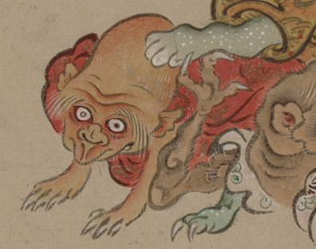

老人のような化物。禿げ上がった頭部は長く、白い眉毛が長く垂れ下がっている。赤い着物をまとい、両手を地に着けて這いつくばっている。
出典：親書誌：U426_nichibunken_0154：妖怪絵巻；ヨウカイエマキ／日付：2010／資源識別子：U426_nichibunken_0154_0045_0000
Copyright (c)2010- International Research Center for Japanese Studies, Kyoto, Japan. All rights reserved.